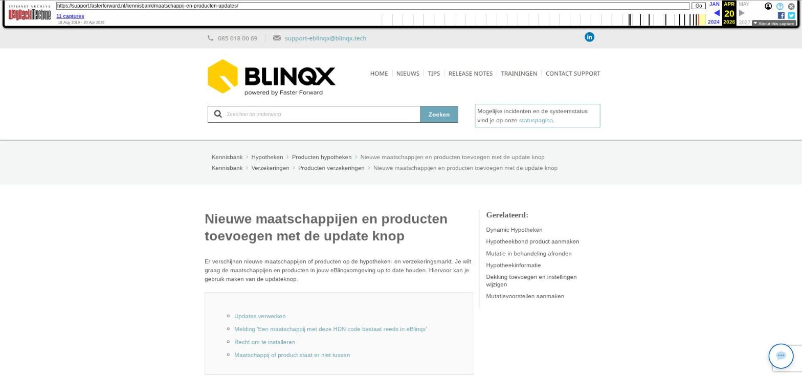

Nieuwe maatschappijen en producten toevoegen met de update knop

Tekstinhoud
Nieuwe maatschappijen en producten toevoegen met de update knop
Er verschijnen nieuwe maatschappijen of producten op de hypotheken- en verzekeringsmarkt. Je wilt graag de maatschappijen en producten in jouw eBlinqxomgeving up to date houden. Hiervoor kan je gebruik maken van de updateknop.
Updates verwerken
Melding 'Een maatschappij met deze HDN code bestaat reeds in eBlinqx'
Recht om te installeren
Maatschappij of product staat er niet tussen
Updates verwerken
Indien er een update beschikbaar is, zie je dit op jouw dashboard. Er verschijnt dan vanzelf een paarse knop 'Update beschikbaar'. De knop verdwijnt weer als alle updates verwerkt of afgewezen zijn en er geen nieuwe updates beschikbaar zijn.
Hieronder vind je de stappen hoe je beschikbare updates kunt verwerken.
Klik op de paarse knop om te kijken welke updates er beschikbaar zijn.
Kies vervolgens wat je wel/niet wilt installeren. Verwerk hierbij alles van boven naar beneden:
Installeer de maatschappij(en). Indien de maatschappij al bestaat, doordat je deze zelf hebt aangemaakt, kies je hier voor 'Afwijzen'.
Koppel de productgroep (indien aanwezig) aan de maatschappij en klik op 'Installeren'.
Vink de producten aan die je wilt installeren en vul hierbij de velden maatschappij, productgroep (niet verplicht) en categorie aan achter de producten. Klik op 'Installeren'.
Alle aangevinkte producten worden nu geïnstalleerd. Indien een product niet aangevinkt is, kan je deze laten staan om later te installeren of af te wijzen.
Let op! Indien je iets afwijst, kan je dit niet terugdraaien. Daarnaast zijn de updates beperkt geldig dus installeer deze op tijd.
Melding 'Een maatschappij met deze HDN code bestaat reeds in eBlinqx'
Geldverstrekkers die met HDN werken krijgen een HDN code. Dit zijn meestal twee letters die refereren naar de naam van de geldverstrekker. Zo is de HDN maatschappijcode van Nationale Nederlanden bijvoorbeeld NN. Wanneer de melding 'Een maatschappij met deze HDN code bestaat reeds in eBlinqx' verschijnt, betekent dit dat er een maatschappij staat opgevoerd met daaronder de code NN:
Dit kan betekenen dat de maatschappij al in jouw klantomgeving staat ingericht, maar dit hoeft niet! Het kan gebeuren dat één maatschappij meerdere aftakkingen heeft met ieder zijn eigen HDN certificaatnummer, maar met dezelfde maatschappijcode. Deze aftakkingen staan als aparte maatschappijen in eBlinqx opgevoerd. Wanneer deze melding verschijnt, controleer dan of het gaat om een aftakking of dat deze maatschappij inderdaad al in jouw omgeving staat. Dit kan je controleren via Beheer – Organisaties & Personen indien je hier de juiste rechten toe hebt.
Recht om te installeren
Heb je géén paarse knop 'Update beschikbaar', stuur dan een mail naar support-eblinqx@blinqx.tech met het verzoek dit recht voor je aan te zetten. Alleen mutatiebevoegden mogen een verzoek tot aanpassing rechten indienen.
Maatschappij of product staat er niet tussen
Staat de maatschappij of het product niet tussen de mogelijkheden? Dan is het altijd mogelijk om deze zelf toe te voegen. Hoe je dit doet, lees je hier.
Laatste update: 15 oktober 2025
Was deze informatie nuttig?
Ja Nee